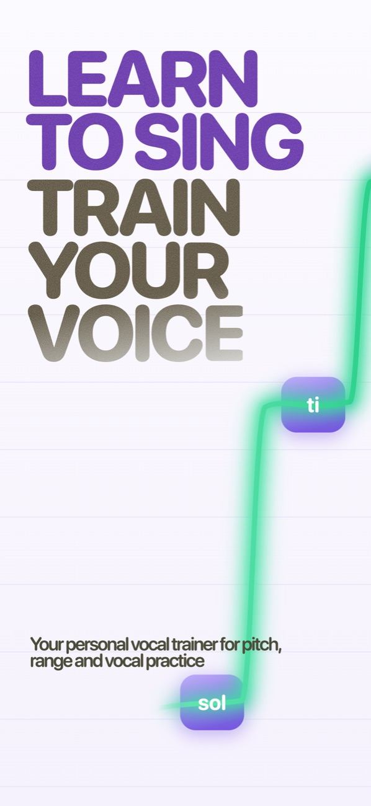
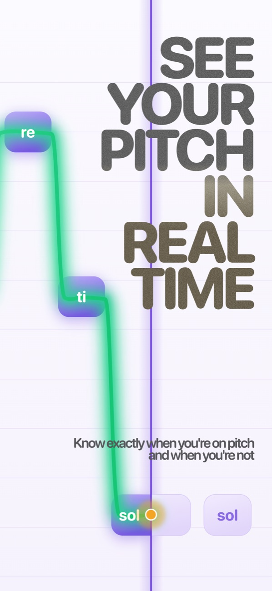
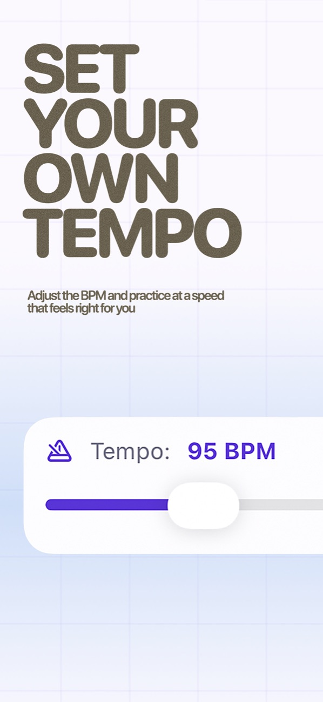

专注练习
Canu 会挑出你卡住的地方，给出引入音，然后让你把整个练习再唱一遍。
Canu 会挑出你卡住的地方，给出引入音，然后让你把整个练习再唱一遍。
看到你正在唱的音，以及唱得有多准。
实时测量你的音域，发现你的声部类型。
从两个热身练习开始，用不断变化的练习建立稳定的习惯。
每次练习后，看到哪些地方进步了，以及接下来该练哪一段。
组合音阶和音列，选择音符和速度并保存。Canu Boogie 是一个可以直接修改的现成示例。
在五线谱上查看你的练习周，以及每天的练习分钟数。
音准、听力训练、灵活性、咬字、气息控制等。
调整 BPM，放慢较难的练习，或逐步加快速度。
选择适合你的外观，或让它自动切换。




嗓音在练习中成长。
请简要说明你遇到的问题。我们会尽快回复，并且仅使用你提供的信息来处理本次请求。
为便于我们提供帮助：请附上设备型号、iOS 版本、应用版本和简短的问题描述。截图通常也很有帮助。
Canu 需要访问麦克风。请在 iPhone“设置”中的 Canu 里允许访问。请在安静的房间练习，不要遮挡麦克风。
只有在你开启录音时，Canu 才会录音。录音保留在你的设备上，你可以在应用中删除。收听、对比、保存和分享属于 Canu Pro。
购买通过你的 Apple ID 进行。在 Canu 的 Pro 页面轻点“Restore subscription”。订阅的管理和取消在 Apple ID 设置中进行。
仅在你同意时：使用数据发送至 Google Analytics，错误报告发送至 Firebase Crashlytics。你可以在 Canu 的设置中通过“Share usage data”和“Share error reports”分别关闭。音频不会被传输。
请选择你使用 Canu 的地区。